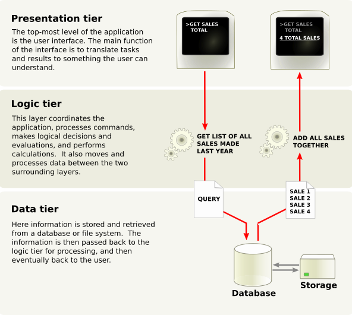

Java EE Web Application Technologies
This course covers the main technologies used to build enterprise web applications on the Java platform (Java EE / Jakarta EE): database access with JDBC, presentation with JSP and JSF, business components with EJB, and object-relational mapping with Hibernate and JPA. Along the four labs, a single application is progressively refactored into a clean layered architecture.


- Lab 1 – JDBC: database access
- Lab 2 – JSP: the MVC presentation layer
- Lab 3 – JSF: component-based web interfaces
- Lab 4 – Hibernate and JPA: object-relational mapping
- Further reading
This page gives an overview of the labs. The full statements, step-by-step instructions and solutions are provided to students during the course.
Lab 1 – JDBC: database access
Goals: connect a Java application to a relational database with JDBC, externalize the
configuration, manage the connection inside an object, use PreparedStatement and
DatabaseMetaData, and apply the DAO and DTO patterns.
Exercises
- Basic JDBC connection: a
HelloDBclass connects to thehumanresourcesdatabase and prints the number of employees. - Configuration and connection management: move the connection parameters to a
configDB.propertiesfile; keep a singleConnectionper object, reuse it and close it properly; write a reusablecountRowsInTable(String tableName)method with aPreparedStatement. - DAO and DTO patterns – a trip management application: DTOs carry the data between layers;
the DAO implementations use JDBC internally, convert each
ResultSetinto DTOs and never exposeConnectionorResultSet. Reflection: how to organize the code so that a change of business domain (trips → events) has minimal impact? - Metadata: count all the rows of the database by listing its tables with
DatabaseMetaData; optionally, generate theCREATE TABLEstatement of a table from its metadata.
public class PlaceDTO {
private Long id;
private String name;
// constructors, getters and setters
}
public interface PlaceDao {
Long createPlace(PlaceDTO p);
PlaceDTO findPlaceById(Long id);
boolean updatePlace(PlaceDTO p);
boolean removePlace(PlaceDTO p);
}Takeaway: the DAO hides how data is stored; the rest of the application only sees DTOs.
Lab 2 – JSP: the MVC presentation layer
Goals: extend the trip application of Lab 1 into a layered MVC web application with JSP as the view, and increase the level of abstraction step by step.
Exercises
- Displaying data: a
PlaceControllerservlet calls the DAO, stores the list of places in the request and forwards it tolistPlaces.jsp. No SQL in the JSP pages. - The controller: map the servlet to
/placesand implementdoGet. - EL and JSTL: replace the Java scriptlets with EL expressions and
<c:forEach>; the pages only handle DTOs. - User input: an
addPlace.jspform posted to the controller, which creates the place and redirects to the list. - Service layer: move the business logic from the controller to a
PlaceService. - Reflection: which layers change when the domain changes, and how to remove JDBC from the web layer entirely or replace JSP with another view technology (Thymeleaf, REST API)?
<%@ taglib uri="http://java.sun.com/jsp/jstl/core" prefix="c" %>
<ul>
<c:forEach var="place" items="${places}">
<li>${place.name}</li>
</c:forEach>
</ul>Target architecture: JSP (view) → controller (servlet) → service layer → DAO layer → database.
Takeaway: each layer has a single responsibility; a view only displays data.
Lab 3 – JSF: component-based web interfaces
Goals: build web interfaces with Jakarta Faces (managed beans and Facelets), handle forms, navigation, validation and conversion, and connect the interface to a business layer made of EJBs.
Exercises
- First JSF page: a
HelloBeanmanaged bean displays the current time. - Deployment: package a WAR and deploy it on Apache Tomcat, then on WildFly; compare the two.
- Login form and navigation: redirect to a different page depending on the user.
- Authentication against a simulated database (an application-scoped
UserRepository). - Tables: display the users with
<h:dataTable>. - Advanced form with dates, amounts and addresses, using converters.
- JSF and DAO: reuse the
PlaceDaoto create, list and delete places from a JSF page. - Validators and converters: built-in validators, a custom postal code validator, a custom
Addressconverter and global messages. - EJB integration: a stateless
PlaceServiceEJB injected into the JSF bean, with container-managed transactions and role-based security (@RolesAllowed).
@Named
@RequestScoped
public class HelloBean {
public String getCurrentTime() {
return java.time.LocalTime.now().withNano(0).toString();
}
}
<h:body>
<h1>Hello, it is #{helloBean.currentTime}</h1>
</h:body>Target architecture: JSF → EJB (business layer) → DAO → database.
Takeaway: EJBs bring transactions, security and concurrency management for free; they are worth it for enterprise applications, not for a simple CRUD.
Lab 4 – Hibernate and JPA: object-relational mapping
Goals: use the Hibernate ORM, compare XML and annotation mappings, write HQL queries, move from
the Hibernate Session API to the JPA EntityManager, map relationships and inheritance, and
study performance issues (N+1 queries, connection pools).
Exercises
- Inserting data: map an
Entreprise(company) class to its table with an XML mapping file, then with JPA annotations, and compare the two approaches. - Retrieving an entity by its identifier, including the case where it does not exist.
- HQL queries: all companies, search by name with named parameters, sorting, counting.
- Update and delete, and the life cycle of entities.
- JPA
EntityManager: redo the CRUD operations through JPA, with Hibernate as the provider. - Relationships:
@OneToMany/@ManyToOnebetween companies and employees,mappedByand cascades. - Inheritance:
Employe,ManagerandDeveloper; theSINGLE_TABLE,JOINEDandTABLE_PER_CLASSstrategies. - Lazy vs. eager loading: reproduce the N+1 queries problem, then solve it with
JOIN FETCH. - Connection pools: time 100 successive queries without a pool, with C3P0 and with HikariCP.
- DAO + Service architecture with JPA, transactions being handled in the service layer.
| Hibernate native API | JPA API |
|---|---|
SessionFactory | EntityManagerFactory |
Session | EntityManager |
session.save() | em.persist() |
session.get() | em.find() |
session.update() | em.merge() |
session.delete() | em.remove() |
// N+1 queries: one query for the companies, then one query per company
List<Entreprise> list = em.createQuery("FROM Entreprise", Entreprise.class)
.getResultList();
for (Entreprise e : list) {
e.getEmployes().size();
}
// Solution: fetch the employees in the same query
SELECT e FROM Entreprise e JOIN FETCH e.employesTakeaway: an ORM removes most of the JDBC code, but you still need to understand the SQL it generates.
Further reading
- Martin Fowler, Patterns of Enterprise Application Architecture, Addison-Wesley, 2002.
- Deepak Alur, John Crupi and Dan Malks, Core J2EE Patterns: Best Practices and Design Strategies, 2nd ed., Prentice Hall, 2003.
- Christian Bauer, Gavin King and Gary Gregory, Java Persistence with Hibernate, 2nd ed., Manning, 2015.
- Eclipse Foundation, Jakarta EE tutorials and specifications.